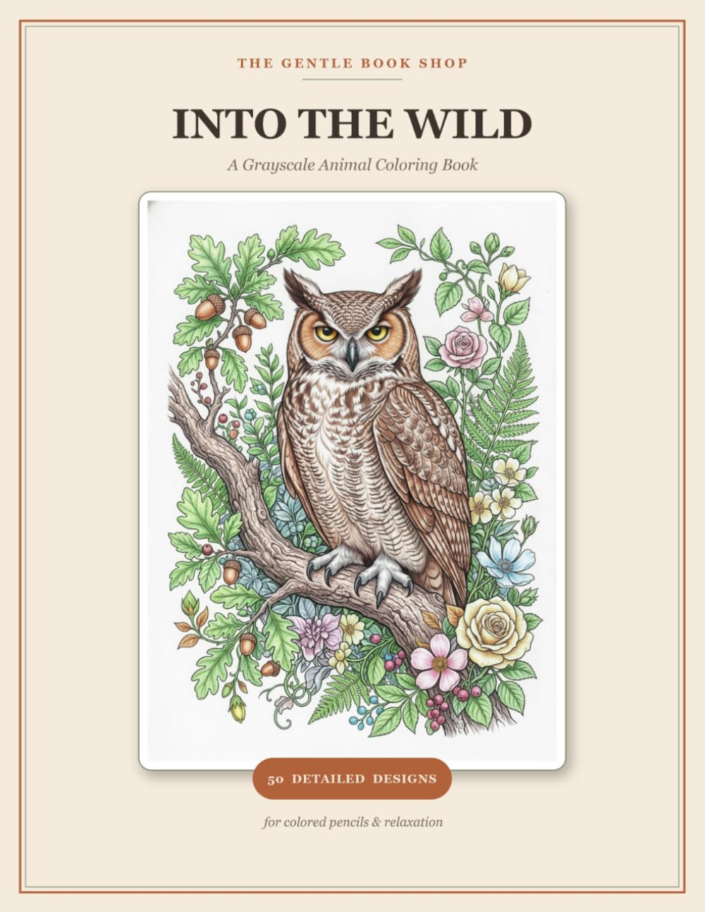

Fifty grayscale animals, each set in a lush botanical world.
Printed and shipped by Amazon. Scroll down to look inside first.
8 real pages from the printed book. Tap any page to see it full size.
Inside Into the Wild you will find 50 grayscale animal designs: majestic owls, foxes, big cats, deer, sea life, birds and more, each set in a lush, intricate botanical world.
Unlike flat line-art books, these designs are rendered in soft, realistic grayscale shading, the colourist's secret weapon. Simply layer your coloured pencils over the grey tones and watch each animal turn rich, dimensional and gallery-worthy, with almost no effort.
Fifty detailed designs make a full menagerie of wild animals in beautiful natural scenes. The grayscale shading guides realistic blending and depth, and the intricate botanical backgrounds of ferns, flowers, leaves and berries give you somewhere to lose yourself.
Single-sided pages mean you can colour without worrying about bleed-through ruining the next design. Calm, mindful relaxation: slow down, breathe, and create something beautiful.
No rush. No perfect. Just you, your pencils, and the wild coming to life.
{kind=link}
{kind=link}
{kind=link}
{kind=link}
{kind=link}
{kind=link}
{kind=link}
{kind=link}